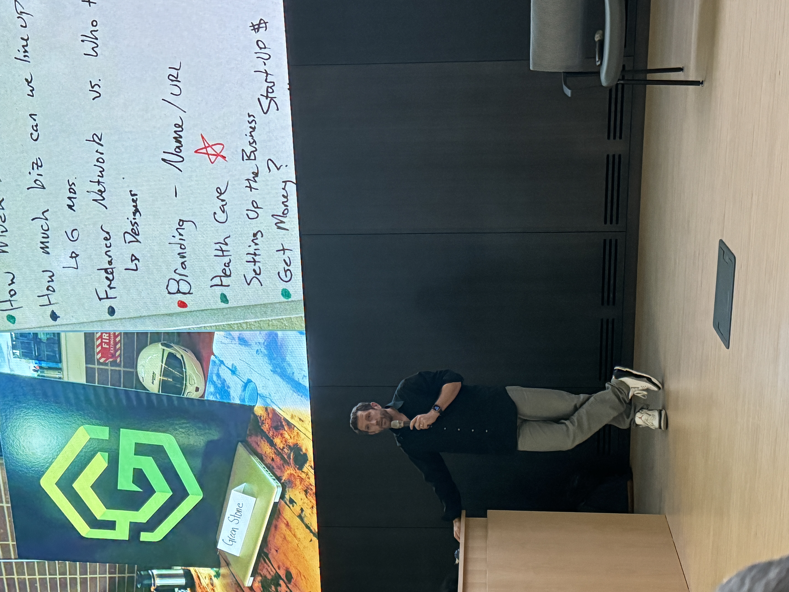
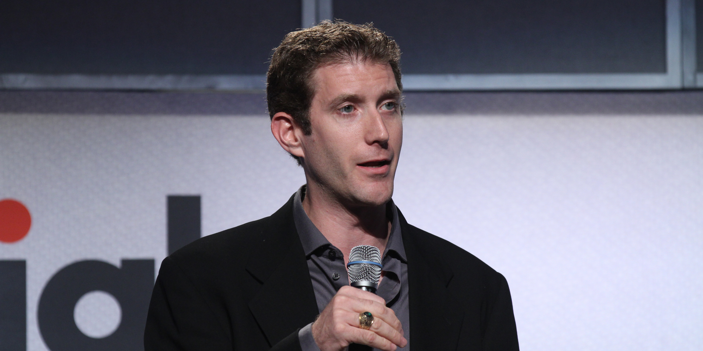
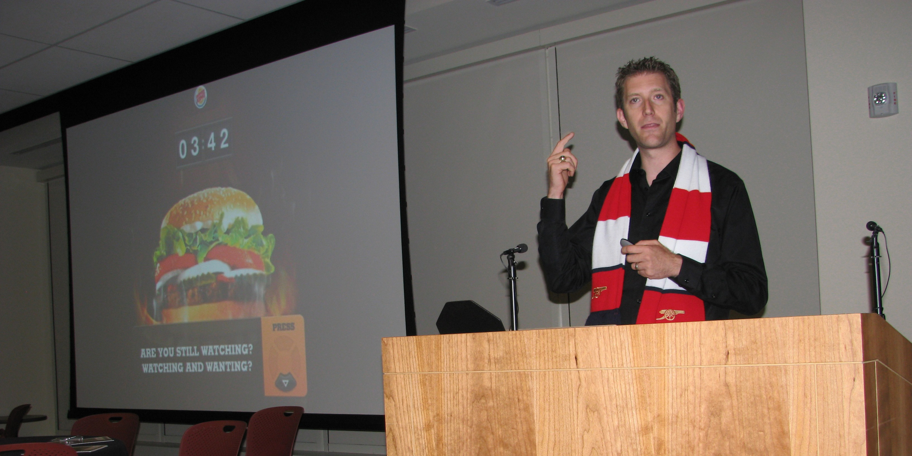

Ideas worth sharing.
Articles, interviews, and speaking engagements on design, leadership, and the evolving landscape of experience-driven business.
Recent highlights.
Several months on from the launch of Larson’s new direct-to-consumer site, Green Stone reflects on the technical, data and design challenges behind bringing a complex manufacturing catalogue onto Shopify Enterprise for the first time.
Read articleThe CEO and founder of Green Stone on his lifelong journey through design, philosophy for the craft, and the opportunities stemming from the disruption of AI, as part of LBB’s By Design series.
Read articleMatt takes us back to where it all began: sitting at his desk on day one of his UX career, staring at a blank screen, unsure of what to do next — until he simply drew a rectangle and took the first step.
Listen

